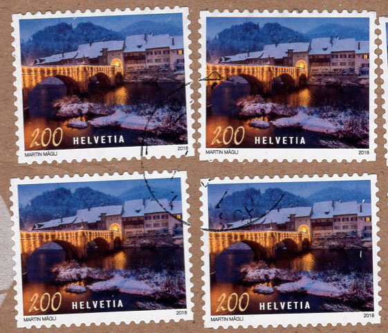
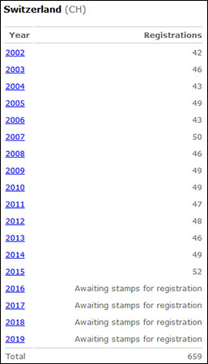
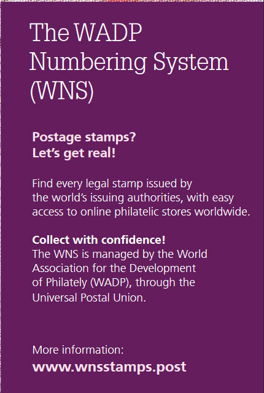
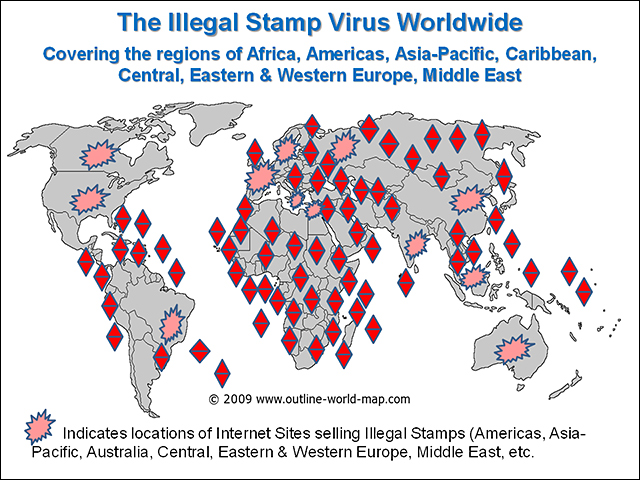
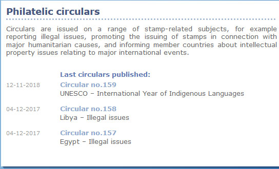

Mesures visant à améliorer le WNS
Mesures visant à améliorer le WNS
et la lutte contre les émissions illégales
Victor MANTA, PWO
Intro - Le système de numérotation de l'AMDP (WNS)
«Mis au point par l'UPU et l'Association mondiale pour le développement de la philatélie, le système de numérotation de l'AMDP (WNS) est entré en vigueur le 1er janvier 2002. A terme, l'objectif est de constituer une base de données de l'ensemble des timbres-poste légaux émis par les Pays-membres et territoires de l'UPU à partir de cette date.
Le système WNS a pour objectif de servir de principale référence au contrôle des émissions de timbres. La publication des timbres-poste officiels protège ainsi les intérêts du secteur philatélique.
Seuls les timbres-poste enregistrés par le Bureau international de l'UPU et dont l'authenticité est reconnue se verront attribuer un numéro unique WNS et seront répertoriés sur le site Web WNS, en anglais et en français.
Le site Web constitue donc un outil de référence et de contrôle, en cas d'omission, contre les émissions illicites des timbres-poste et les étiquettes imitant les timbres. Le système WNS est l'un des outils conçus par l'UPU pour aider les postes et le secteur philatélique à lutter contre ce problème». Source
À la date de rédaction du présent document, la complétude du WMS est loin d'être atteinte, même si les travaux ont commencé il y a 17 ans. Nous citons que quelques raisons de cette situation regrettable :
• Les grandes administrations postales d'Allemagne et de l'Olande, fortement privatisées, ont décliné dès le début leur participation au WMS. Cela n'a pas changé depuis.
• Nous avons appris en 2014, sur la page des agences participantes au WNS, que l'Autorité postale des îles Aland (2012), la Belgique (2012) et la Finlande (2013) avaient cessé d'enregistrer leurs timbres avec le WNS. Source
Qui gère aujourd'hui le WNS ?
Veuillez trouver ci-dessous des extraits du magazine de l' UPU Union Postale (décembre 2018). Source
“Nouvel élan pour la philatélie. Lisa Salcedo Pfeiffer travaille à l'UPU depuis 2015, où elle a commencé comme support avec le programme Philately, avec un accent particulier sur le système de numérotation mondial (WNS) pour les timbres postaux. Elle travaille maintenant en tant que spécialiste WNS du programme. Le WNS a été créé et développé par l'Association mondiale pour le développement de la philatélie (AMDP) et l'UPU en 2002 dans le but de lutter contre les émissions de timbres illicites. Il sert non seulement de base de données de tous les timbres authentiques émis par les pays membres de l'UPU, mais également de répertoire des philatélistes désireux d'accéder aux milliers de timbres uniques du monde. (...)
En plus de ses tâches d'enregistrement WNS, Lisa déclare qu'elle s'emploie également à moderniser le système pour lui donner une meilleure visibilité, ainsi qu'à en améliorer l'utilisation comme un moyen de lutter contre les problèmes illégaux (soulignement ajouté), comme source d'expertise et comme plate-forme de vente. (...).
Fig. 1. Lisa Salcedo Pfeiffer. Specialiste WNS du BI de l'UPUEn coordination avec le responsable du programme Philatelie et Coupons Réponse Internationaux, Lisa assume l'entière responsabilité de la gestion du service WNS". Source .
Remarque : une entrevue avec Mme Olfa Mokaddem, responsable du programme Philatelie et Coupons Réponse Internationaux, a été publiée par la PWO ici.Le WNS en 2019
Commençons par un exemple concret, en suivant la suggestion de Mme Salcedo Pfeiffer : «Parcourez les timbres officiels des émissions des autorités postales (...)». Veuillez considérer svp les timbres suisses 2018 présentés ci-dessous, que j'ai reçu récemment apposés sur un colis.

Fig. 2. Suisse 2018 - NoëlParce que je voulais savoir ce qui y était affiché, j'ai essayé de vérifier sur le WNS, où les timbres suisses étaient très rapidement énumérés . Mais dans ma tentative j'ai a été coincé par une mauvaise surprise. J'ai appris que, depuis 2016, le WNS est en attente d'enregistrement de timbres de la part de l'AP Suisse, comme le montre l'image Fig. 3. Source.

Fig 3. Enrregistrations de la Suisse sur le WNSC'est un fait alarmant parce que il se réfère à la très sérieuse administration postale suisse , celle qui respecte scrupuleusement ses devoirs et obligations. Est-ce que ça pourrait être une expression de leurs doutes sur l'utilité du WNS ? Et d'ailleurs, c'est la même chose pour les enregistrements de la Chine ou de l'Inde, qui n'ont pas enregistré de timbres avec le WNS depuis 2014, l'Indonésie et la Pologne - depuis 2013, ou Gibraltar - depuis 2004 !

Fig. 4. "Trouvez chaque timbre légal émis par les autorités émettrices du monde (...)"Dans les circonstances évidentes d'un WNS plein de trous, la publicité ci-dessus, faite par l'UPU pour son système WNS, ressemble à une propagande et à une justification de certains emplois, positions et salaires... . La triste réalité est que le très coûteux WNS (financé par les CHF 50 payés par les administrations postale pour chaque timbre enregistré) n'a pas réduit le nombre de timbres illégaux, un fait évident pour ceux qui observent en ligne les marchés philatéliques.
Le WNS et la lutte contre les timbres illégaux
Le 11 mai 2016, Mme Maria Zofia Libera, Coordinatrice de l'Observatoire Philatélique Mondial, a présenté une image choquante sur la prolifération des émissions de timbres illégaux au Forum philatélique POSTEUROP, «L'expérience client», à Essen (Allemagne) :

Fig. 5. Prolifération des émissions de timbres illégauxMalheueresement, l'UPU a abandonné le seul outil pouvant être utilisé par les collectionneurs de timbres du monde entier pour identifier les émissions illégales, à savoir les circulaires du BI de l'UPU. Il est étonnant que la dernière circulaire ait été publiée en 2017, comme l'illustre l'image présentée ci-dessous (Fig. 6).

Fig.6. Dernières circulaires IB - UPU publiéesIl faut noter que l'absence de timbres illégaux dénonces par le circulaires de l'UPU ne signifie pas qu'il ya une diminution du nombre de timbres - poste illégaux ou des pays victimes d'elles. Il est de notoriété publique que de nombreux pays en développement ne disposent toujours pas d'un accès facile à Internet pour effectuer des études de marché afin de découvrir des timbres illégaux émis en leur nom, mais sans leur permission.
Il convient également de noter que la responsabilité de vérifier les informations présentées par les administrations postales (AP) requérantes a été transférée du Bureau international (BI) de l'UPU, qui effectuait auparavant des recherches préliminaires, aux autorités postaux elle mêmes. Dans ces conditions, il n'est pas surprenant que le nombre de dénonciations de timbres illégaux, tel qu'il ressort des circulaires du BI de l'UPU, ait diminué au cours des dernières années.
Par conséquent, il n'est pas étonnant que déjà en 2016 un grand nombre de timbres illégaux aient été exposés et leurs présentations se vue même décerné de prix au World Stamp Show de New York, du 28 mai au 4 juin 2016. Source, sur ce site. Le fait qu'AUCUNE nouvelle circulaire sur les illégaux n'ait été publiée au cours des deux dernières années semble être une méthode pour cacher la prolifération continuelle de timbres illégaux, en concordance avec un WNS de moins en moins crédible et utile.
A peu près ça sur :" (...) dit qu'elle travaille également à moderniser le système pour lui donner une meilleure visibilité, ainsi qu'à améliorer son utilisation en tant que moyen de lutter contre les timbres illégaux". Mme Salcedo Pfeiffer, j'ai le regret de vous informer que vos affirmations ne sont pas conformes à la réalité, en étant apporté par vous à l'appui d'une cause et d'une direction complètement fausses.
Qu'est-ce qui devrait être fait
1. L'UPU et le WADP devraient abandonner l'idée manquée que le WNS est ou peut être la solution pour réduire les problèmes de timbres illégaux. Cependant, il pourrait être poursuivi comme un outil de marketing pour des administrations postales.
2. Le WNS ne devrait être maintenu que si l'on suppose que les droits d'enregistrement peuvent être ramenés au niveau de 5 dollars environ, soit un dixième de ce que le WNS facture aujourd'hui. Cela pourrait être possible si l'ensemble des activités d'enregistrement est reconsidéré (voir ci-dessous).
3. Vingt pour cent des frais d'enregistrement serviront à relancer la recherche et à aider les administrations postales à dénoncer les émissions de timbres illicites par l'intermédiaire des circulaires du BI de l'UPU.
4. En utilisant les mêmes unités WNS enregistrantes, en se basant sur 3., ainsi que sur les circulaires déjà publiées, une base de données interrogeable en ligne, contenant la description et les images de timbres illicites connus devrait être créée. Elle sera accessible gratuitement dans le monde entier sur le Web et sera mis à jour très souvent.
Des nouveaux coûts pour le WNS
Nous estimons que les coûts du WNS pourraient être beaucoup réduits et son l'efficacité beaucoup agrandit par rapport à ce que se fait au présent. Un des moyens pour atteindre cet objectif est de transférer l'ensemble de activités vers des sociétés privées situées dans des pays à bas niveau de salaires. Une autre consiste à présenter sur le WNS des images des timbres approuvés rédigées par les créateurs de timbres, en évitant l'envoi de timbres imprimes et des opérations de numérisation. Celles-ci sont compliquées et ont souvent donnent des résultats non optimaux. Cliquez sur les images ci-dessous pour voir les différences entre les deux méthodes, telles qu'elles apparaissent dans des exemples réels du WNS et de l'administration postale britannique.
De plus, l'utilité des images en haute résolution en étant douteuses, elles pourraient être abandonnées pour les nouveaux enregistrements dans le futur WNS.
About the author. Victor Manta is the founder and the current president of the PWO. He is mostly interested in thematic (topical) stamps and in the philately on the Internet. His philatelic sites were multiple awarded in web sites philatelic competitions. He is also a well-known philatelic journalist, who published numerous philatelic articles on the web and in printed magazines.
|